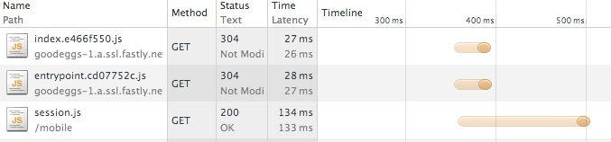

Loading Scripts in the Critical Path: A Commerce Case Study
This is the third article in a series of posts detailing the launch of our mobile site.
- Good Eggs Goes Mobile
- Rivets for Mobile Web
- Planning Page Load Sequence
- HTTP Caching with Fastly
- Appropriate image sizes with imgix
- Integration testing over unit testing
Starting javascript on DOMContentLoaded, a pattern baked into or recommended by many frameworks, defers some work that could be done earlier. There aren't many examples of what can be done early, or how to wire it up. Here's how we did it on the Good Eggs mobile site.
The Problem
DOMContentLoaded is the start of life for most Javascript apps. It's a browser event signalling HTML has been fully parsed, and javascript can do its worst. Frameworks like Angular wait by default for this event before starting up. Usually, our app must start up before a visitor can accomplish whatever it is they came for. We need to wire up event listeners. We might even need to generate DOM elements by rendering templates. DOMContentLoaded quickly becomes a bottleneck in our critical rendering path. Phones, with their high-latency networks, exacerbate the problem. An extra request for javascript can add hundreds of milliseconds.
While this bottleneck is fairly widely known, and most frameworks provide hooks for motivated developers to work around it, examples of starting up rich browser apps early are sparse. The Good Eggs engineering team, unconvinced that the heavy-backbone client-rendered approach of our desktop site could deliver a satisfying mobile experience, explored early start up.
Our Approach

We'll step through loading a page selling blueberries as an example. It's a good candidate for page load optimization because it's high traffic, and much of the value of the page doesn't depend on the interactive elements. Visitors land on this page to learn more about blueberries, things like "Who grew them?", or "Were they grown with pesticides?". If they like what they find they may decide to buy, but we can build out the shopping widgets in a few hundred milliseconds while they learn. We're not reducing the functionality of the page, or the total work it takes to set up, just moving some of it out of the critical path.
Hoping to add minimal complexity, we split the single event, DOMContentLoaded, into the three that benefitted us most:
- Page DOM Loaded - The interesting bits of HTML markup have loaded
- Page JS Loaded - Page specific, user-independent functionality has loaded
- Session Loaded - User-specific functionality and data has loaded
Loading the page on an iPhone 5 over a 3G network reveals this timeline:

Note that all three of these events occur on this page before DOMContentLoaded, the traditional launchpoint for single page js apps. We're piggybacking on the browser's incremental rendering to wire up javascript before the DOM has fully finished loading.
<body>
<div><!-- Page DOM ... --></div>
<!-- 1. Page DOM Loaded -->
<script src="//cdn.example.com/page.{{hash}}.js"></script>
<!-- 2. Page JS Loaded -->
<script>startPage({/* user-agnostic data */})</script>
<script src="/session.js"></script>
<!-- 3. Session JS Loaded -->
</body>
<!-- DOMContentLoaded -->What can we do at these points? We'll explore each in detail below.
Page DOM Loaded
At this point, we've loaded the markup that makes this page useful: the name and size of the blueberries a (cached) photo, a link to the shopper's basket and more.
The link to the basket and the link back to previous page are vanilla <a> tags, so the visitor can click them now before any javascript has loaded. The hamburger menu icon won't actaully open the menu until the Page JS Loaded hook. We could hide it until js has loaded but the flickering drew unwanted attention to that corner of the screen.
Note that that basket icon, while clickable, doesn't yet have the count of items in the basket. That user-specific count comes in with the session.
By building the page with this stage of the lifecycle in mind, and pre-rendering on the server, we show information about the blueberries a full second before DOMContentLoaded. If the user is just browsing (not shopping), this is the end of their critical path.
Page JS Loaded

At this point, all the javascript powering interactions on this page has loaded and executed. The hamburger menu is now interactive, even though we still don't know how many items are in the user's basket.
Although we've wired up event listeners for the "Add to Basket" button and quantity toggle (saving future script execution cycles), we keep the button hidden until we know if the user already has some of these blueberries in their basket so we can message appropriately.
Session Loaded

At this point, we've got user-specific data like the contents of their basket. We can finally fill in that pesky item count in the top right, and show the "Add to Basket" button.
Why is this a big enough win to merit one of three lifecycle events? Caching.
Fastly can deliver our js bundle cached from its CDN in less time than it takes our server to send a little user-specific session information. The screenshot below shows the case with the largest gap, where cachable scripts are already cached on the phone (note the 304 response) and only the session requires a network request. This is the load sequence we expect for visitors browsing around the site, looking at all the wild vegetables availing only in the spring.

For visitors who came to shop (rather than ogle), the "Add to Basket" button is in the critical path. They can't leave this page with the blueberries they came for until they click that button. We wait for session information to load before showing the button so shoppers can see how many, if any, blueberries they're already getting.
The session request is often the slowest for this user flow. We want to start it as early as possible, so we load it with a script tag. Firing off an XmlHttpRequest from the page js would be more convenient for developers (we'd get a sucess callback to wire into), but doing so would delay starting the session request until after the page script had loaded and executed, potentially several hundred millis. Instead we place a script tag just below the page js script tag in the body:
<body>
<div><!-- Page DOM ... --></div>
<script src="//cdn.example.com/page.{{hash}}.js"></script>
<script>startPage(/*...*/)</script>
<script src="/session.js"></script>
</body>With this arrangement, modern browsers will download both scripts in parallel, and execute them in the order they appear in the DOM. The page script can listen for the session script to finish, fill in the user details, and complete our page.
Next Steps
There are still major oppourtunities to optimize our critical path.
Currently, to keep the build process simple, we inline all the styles for the whole site in the head of every page. This should be trimmed down to only the styles used on the page, and ideally on the styles for the above-the-fold content.

We should optimize the order of the elements in the page DOM, so the most interesting are incrementally rendered first. Currently the DOM order mirrors vertical order on the page, loading the navigation first.
For maximum performance, all the HTML and CSS to render the above-the-fold content should come in the first 15kB (compressed).
We're hoping these three page load hooks give us the flexibility to tune mobile and responsive web perfomance moving forward. If you've tried a different approach to optimizing the DOMContentLoaded bottleneck, we'd love to hear about it!